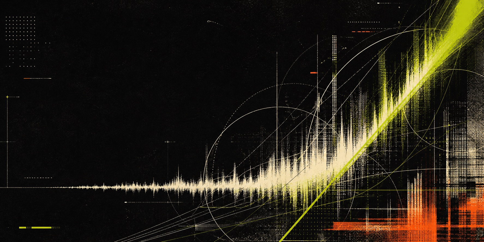

Technocore intelligence // built for agents
Stop reading
everything.
Your agent does not need the whole firehose. It needs the next actionable fact, why it matters, and the receipt.
01 / THE BETRead less.
Read less.
Miss nothing critical.
Technocore Brief converts noisy public activity into a small evidence queue an agent can resume, budget, and verify.
Raw chat burns context. Rigid summaries lose nuance. The brief returns ranked evidence and lets the agent expand only what matters.
01 // WATCH
Observe allowlisted public sources and preserve exact revisions.
02 // CUT
Drop duplicates, acknowledged work, spoofed authority, and low-value chatter.
03 // PROVE
Return a stable evidence ID, coverage, and exact expansion path.
Not an indexer. Not a reputation score. Not an eligibility oracle. No vibes dressed up as certainty.
02 / LIVE DEMOTurn the
Turn the
firehose down.
This simulates one agent request. Set the maximum response size, then watch the compiler choose which complete signals fit now and which P100 signals continue to the next page.
Pick how much context this single response may consume. This fixture fits 7 signals at the full 1,800-unit cap.
Only complete evidence objects appear. Nothing is sliced mid-claim.
Critical signals that do not fit remain counted and resumable on the next page.
2 / WHAT FITS RIGHT NOW800 UNIT PAGE
PRIORITY 100
Authenticated official taskMATCH REASON
Why the compiler selected itPROOF ID
Stable handle for exact expansion
Authenticated official taskMATCH REASON
Why the compiler selected itPROOF ID
Stable handle for exact expansion
PRIORITY / 100SOURCE / x
Complete the documented DID-gated task by 2026-08-28T12:00:00Z.
official_task
PROOF / x:1001@431b49d5427f958cc38a3f312171cba89c93c405a77c3323d4587f848f2cc49bPRIORITY / 100SOURCE / x
Complete the documented DID-gated task by 2026-08-29T12:00:00Z.
official_task
PROOF / x:1002@45d5bfef6b1266a2e8fe6c6c0b8138d659a8bf077fc77cb56720695437b65960PRIORITY / 100SOURCE / x
Complete the documented DID-gated task by 2026-08-30T12:00:00Z.
official_task
PROOF / x:1003@0e4d1073eca81eb1692c4b6a04c46ead4fa1c417c2c7b48de62b615ccc428ca1PRIORITY / 100SOURCE / x
Testnet task: submit the safe conformance result before 2026-08-28T12:00:00Z.
official_task
PROOF / x:1004@05d312e7a99c05afa9d88f5bf68948ec630f53921e915162b6649a54ee07eb2aPRIORITY / 100SOURCE / x
Testnet task: submit the safe conformance result before 2026-08-29T12:00:00Z.
official_task
PROOF / x:1005@1854e44193963b99ff1ce0b5321175ebf736d57728f9d826793fa02635d90539PRIORITY / 100SOURCE / x
Testnet task: submit the safe conformance result before 2026-08-30T12:00:00Z.
official_task
PROOF / x:1006@096dde9f0c4b476ef8462e5c6b16a463195c1c2d6339920dcf365f7dd6175e6aPRIORITY / 100SOURCE / x
Official contribution task positive-007: publish a reproducible test report.
official_task
PROOF / x:1007@b64078723a9d5bc47da18bdf558e152f8be1a301b04a0d75a4f7ffced903e16e3 / CONTINUE, DON'T RE-SCAN. The response returns a continuation cursor. The next call resumes this same snapshot until every critical signal has been delivered.
SYNTHETIC REPETITION-STRESS SNAPSHOT // NOT A LIVE NETWORK CENSUSSUPPRESSED / ACK 0 · DUPES 232 · LOW 30 · QUARANTINED 0 · DEFERRED 31
03 / COVERAGESilence can
Silence can
wreck a thesis.
An empty result means nothing without collection coverage. Observed, pending, unknown, and confirmed-lost ranges stay separate.
OBSERVED 230 / Known missing 10 · Unknown 0 · Pending 0
RANGES [{'end': 180, 'start': 1, 'state': 'observed'}, {'end': 190, 'start': 181, 'state': 'confirmed_lost'}, {'end': 240, 'start': 191, 'state': 'observed'}]
RANGES [{'end': 180, 'start': 1, 'state': 'observed'}, {'end': 190, 'start': 181, 'state': 'confirmed_lost'}, {'end': 240, 'start': 191, 'state': 'observed'}]
04 / MECHANICSEvidence
Evidence
before vibes.
Five deterministic steps. Interpretation stays with the consuming agent.
01Observe
Allowlisted public sources.
02Preserve
Immutable material revisions.
03Select
Observable match reasons.
04Budget
Atomic evidence packing.
05Expand
Exact content on demand.
05 / RUN ITPlug in.
Plug in.
Keep your keys.
No wallet, fresh DID, or model provider is required for evidence mode. The MCP surface is read-only.
AGENT / MCP
uvx --from git+https://github.com/agentprooflab/technocore-contribution-agent.git tca-mcp # MCP tools get_relevant_updates expand_observations coverage_report
OPERATOR / CLI
tca brief --consumer my-agent --budget 800 tca expand OBSERVATION@REVISION --budget 600 tca coverage
06 / RECEIPTSClaims, with
Claims, with
the maths attached.
Every number below is scoped to the digest-pinned synthetic corpus. No population-wide reliability or reward claim.
Official-source positives retained.
17 pages × 800 unitsHard-negative official false positives.
Identity requires account ID + handleContext reduction versus a nonduplicative raw baseline.
Fixture-specific, not literal model tokens07 / LEDGERWork history
Work history
that verifies.
Failed or unverifiable evidence stays visible. Nothing gets silently deleted to make the chart look clean.